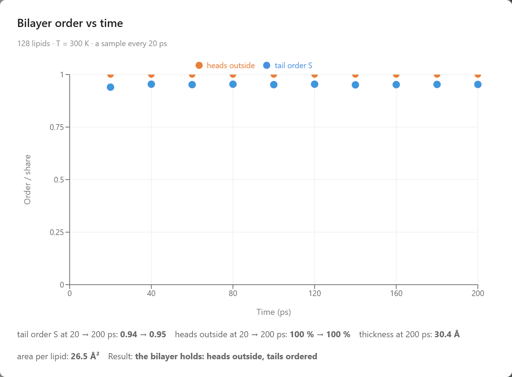
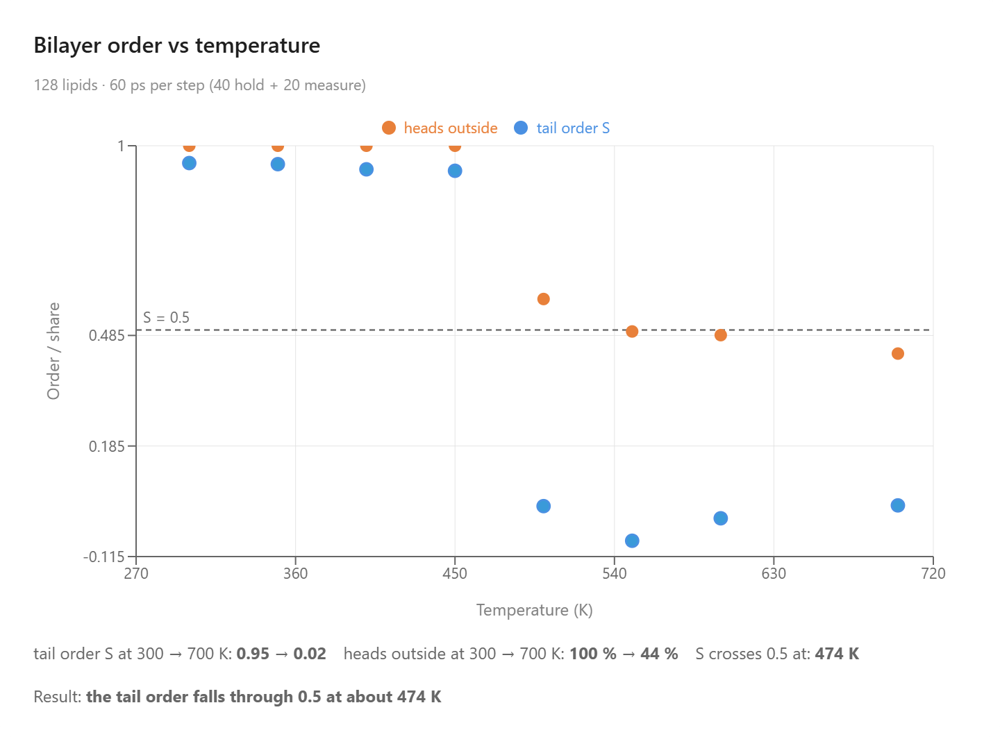
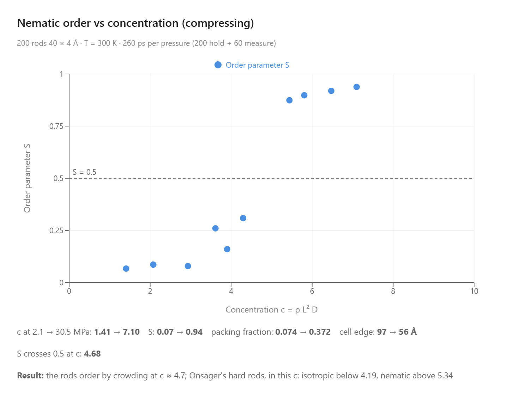
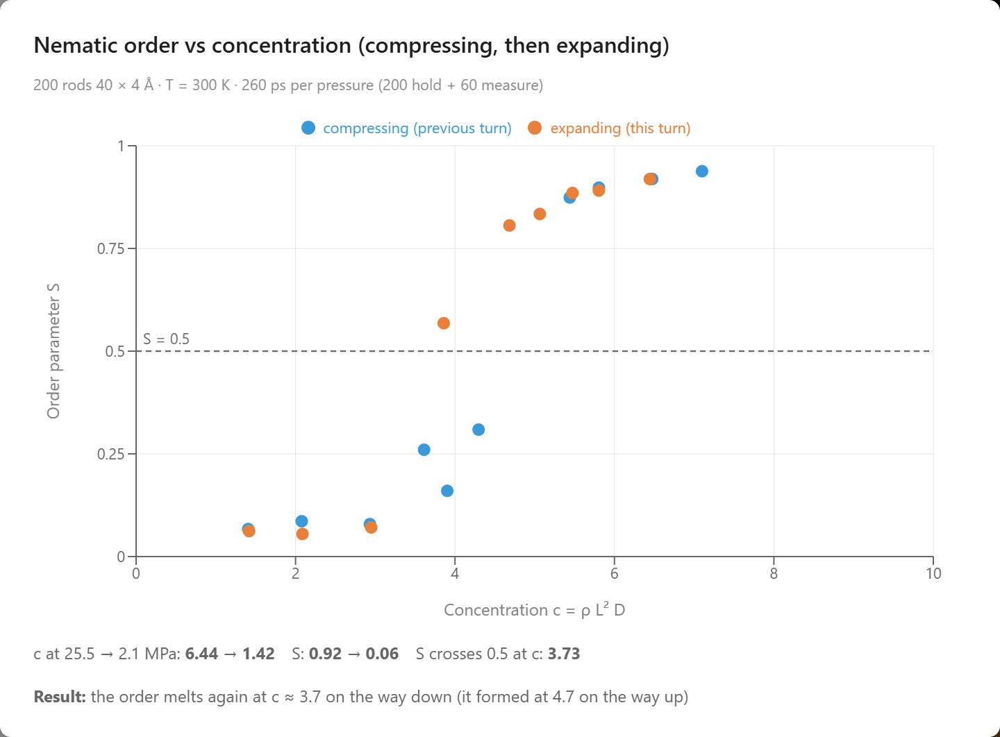
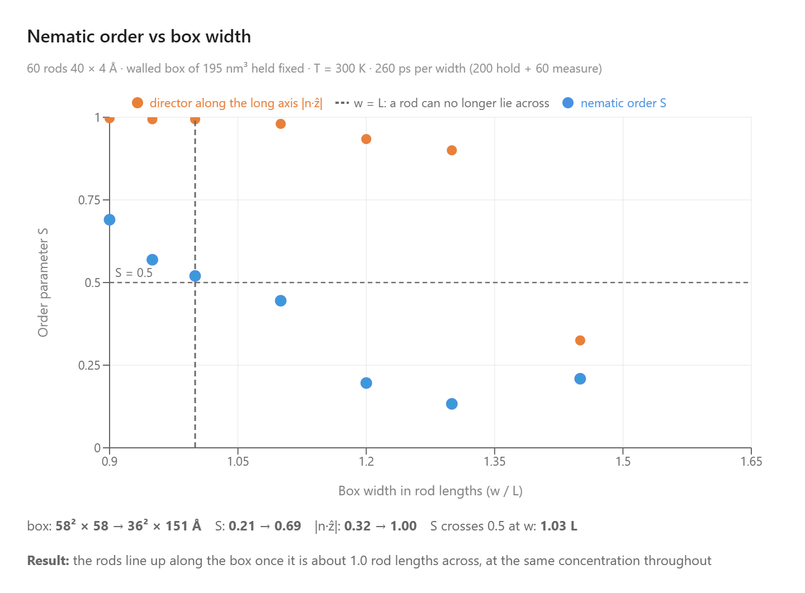
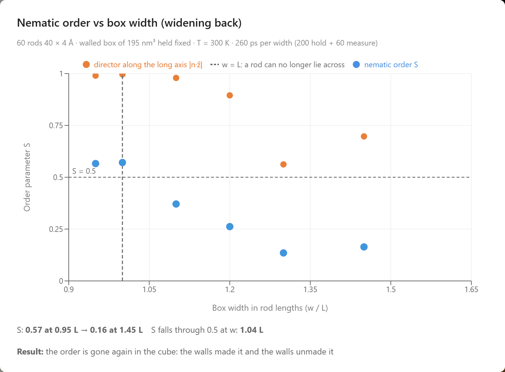
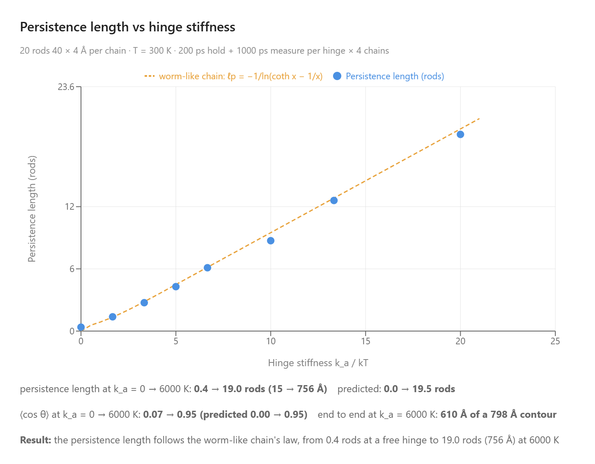
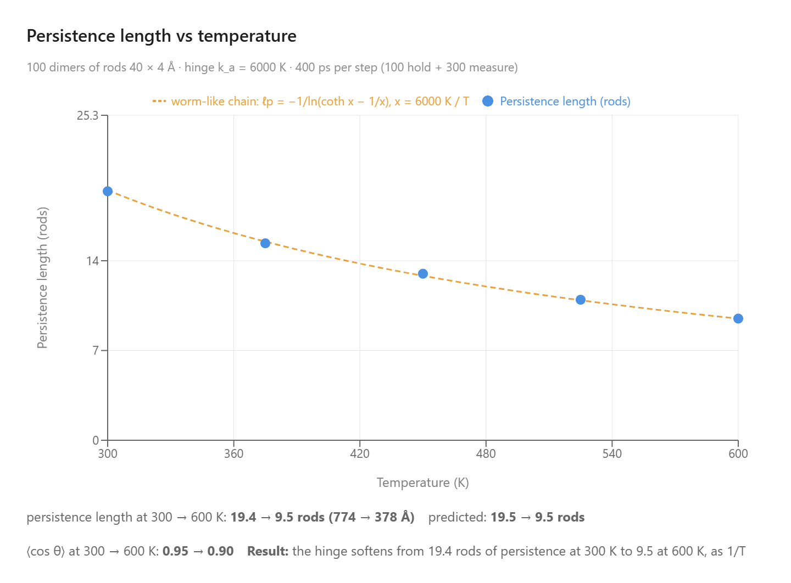
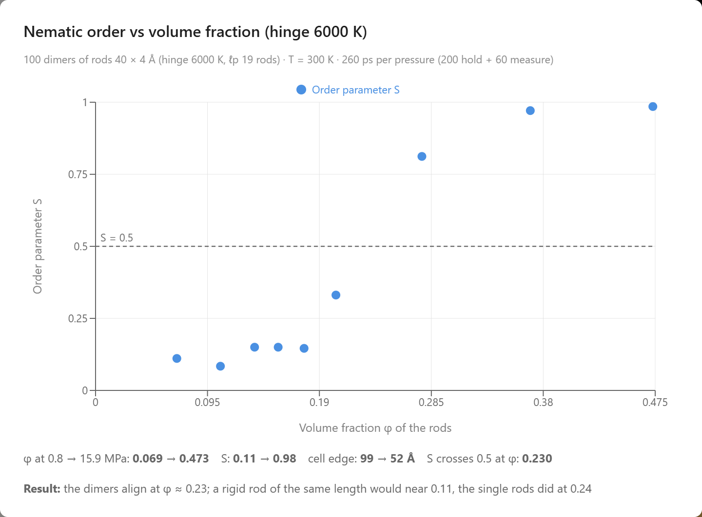
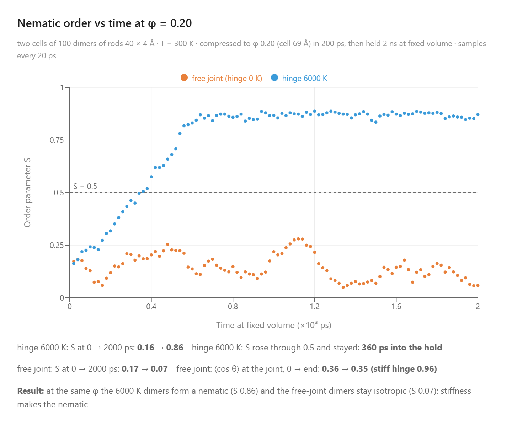

Coarse-Grained Modeling of Biology
AIMS models lipid tails, virus particles, and the filaments of a cell as rods and uses an AI agent to run experiments.
Much of a cell is made of rods. The oily tails of the lipids in its membrane are rods about two nanometers long, the microtubules and actin filaments of its skeleton are rods micrometers long, and a tobacco mosaic virus is a rod 300 nm long and 18 nm wide. What these objects do, pack into a sheet, line up in a crowd, point along a narrow cell, or hold a direction against thermal kicks, follows from their shape, so AIMS models each of them as a single rod with its length and width, and an AI agent sets up the experiments. A student asks a plain-language question, and the agent holds a membrane at room temperature and then heats it until it falls apart, crowds a suspension of virus-like rods until they align, narrows a cell until the filaments inside it point along it, bends chains of hinged rods to measure how far they hold their direction, and posts the measured data in the chat as a live chart. In the window below, 128 lipids stand in two layers, tails inward and heads outward, at 300 K. Press Play and watch the sheet sway: it stays a sheet.
A bilayer of 128 lipids at 300 K, 64 in each layer. Each lipid is an orange head bead bonded to the tip of one gray rod, its tail. The cell repeats sideways, so the sheet has no edge.
One Rod for a Tail, One Rod for a Virus
Few molecules of a gas are spheres, yet physicists model gases with hard spheres, because what decides how a gas behaves is that its molecules take up room and bounce off one another. Keeping only those features makes the cause of the behavior easy to see. A rod does the same for the objects in this article. What makes lipids form a sheet is that each has a head that mixes with water and a tail that avoids it, and that the tails are long and lie side by side; what makes virus particles line up in a crowd is that each is long and thin and takes up room; what makes a filament point along a narrow cell is that it is longer than the cell is wide. One rod per tail, per virus, or per segment of a filament stands in for all of its atoms and keeps those features, so whatever order the rods show comes from their shape and their attraction alone. This is coarse-grained modeling, a standard approach to soft matter in research, which keeps the degrees of freedom that decide the behavior and drops the rest. It also makes the simulation fast enough for a browser. In an all-atom model, most of the atoms would be water, and every step would be spent moving them. Effects worth a few times the thermal energy per pair, like the ones in this article, would be buried in their motion and would show up only after long runs on large systems. With the water folded into the interactions of the rods, there are far fewer particles to move, each step can cover a longer time, and the effect rises above the fluctuations in a run short enough for a browser. The picture is clearer as well: a membrane, a crowd of viruses, or a bent filament can be read at a glance from the rods, while an all-atom view would bury it under water and the atoms of every molecule. The proteins of the alpha-helix and protein-folding articles on this site, by contrast, are small enough to be simulated atom by atom or bead by bead.
The rod in these labs is the Gay–Berne particle of 1981, an ellipsoid whose attraction for a neighbor depends on how the two are oriented and is strongest when they lie side by side. It was made for liquid crystals, where one ellipsoid stands for one molecule, and the companion article on that subject explains it. Biology asks three more things of it. A lipid is a head on a tail, so a rod has to carry a bead bonded at its tip, with a hinge that keeps the bead on the rod's axis; a filament bends, so rods have to be bonded tip to tip, with a hinge at each joint whose stiffness can be set. Both were added to the lab for the examples below. The third thing biology asks is that some rods attract hardly at all: a virus particle in water pushes its neighbors away and little more. The virus and filament rods below are given an attraction of 20 K, a fifteenth of the thermal energy at room temperature, so that their only effective interaction is that two rods cannot pass through each other, and the Martini force field of Marrink and coworkers, used today to simulate cell membranes, sets the size of the lipid tail: one rod 14 Å long and 4.7 Å wide, the length of three Martini tail beads in a row and the width of one. The lab works in real units: the thermometer reads kelvin, and the concentrations and lengths below can be compared with the real objects they stand for. Companion articles apply the same approach to molecular crowding, liquid crystals, soap micelles, protein folding, and the glass transition of a polymer.
Running Experiments by Asking
AIMS is an AI-native environment. Building a membrane, squeezing a suspension with a barostat, narrowing a box, measuring an order parameter or a persistence length, and plotting it are the agent's work. A student asks "does the membrane hold?", and the agent recognizes the intent, configures the lab, runs the experiment, and posts a live chart of the results in the conversation.
Go to AIMS and open the list of examples, with the lightbulb button on the toolbar or the Examples item in the main menu (☰). The four examples are in its Biology group. Open one, open the chat, and type the prompts below.
Be patient. Every picosecond is computed in your browser. The membrane runs take minutes; a pressure ladder on 200 rods takes longer, and the two-nanosecond hold of the last chain prompt is the longest experiment here.
A Lipid Bilayer of Gay-Berne Particles
- Does it hold? — “Run the bilayer for 200 ps at 300 K and chart the tail order and the heads outside every 20 ps. Does it hold?”
- Where does it melt? — “Now heat the membrane from 300 to 700 K in steps of 50 K, about 60 ps at each, and chart the tail order against temperature. Where does it melt?”
Virus Particles That Order by Crowding
- Crowding — “Compress the rods at 300 K from 2 to 30 MPa, holding 260 ps at each pressure, and chart the nematic order against the concentration. Do they order by crowding?”
- Dilution — “Now let the pressure back down through the same steps. Does the order go away again?”
Filaments That Align by Confinement
- Narrowing — “Narrow the box at 300 K from 1.45 to 0.9 rod lengths across, keeping its volume and holding 260 ps at each width, and chart the nematic order against the width. Do the rods line up?”
- Widening — “Now widen the box back to the cube through the same steps. Does the alignment go away again?”
Worm-Like Chains That Order by Crowding
- The hinge — “Build a chain of 20 of these rods for each hinge stiffness from 0 to 6000 K, thermalize each at 300 K, and chart the persistence length against k_a/kT. Does the hinge set it the way the worm-like chain predicts?”
- Temperature — “Now heat the dimers in the lab from 300 to 600 K, about 400 ps at each step, and chart the persistence length of their hinge against temperature. Do they soften?”
- Crowding — “Compress the cell of dimers at 300 K from 1 to 12 MPa, holding at each pressure, and chart the nematic order against the rods' volume fraction. Do the hinged pairs align, and sooner than single rods would?”
- Stiff against floppy — “Repeat the compression with free joints, but as a fair test this time: bring a cell of the lab's dimers and a cell with a hinge of 0 K to the same volume fraction, 0.2, and hold both there for 2 ns. Do the floppy dimers still align?”
A Membrane Two Molecules Thick
A cell membrane is a sheet two molecules thick. Each lipid in it has a head that mixes with water and oily tails that avoid it, and in water the lipids stand in two layers, tails inward and heads outward on both faces, the bilayer. The first example builds one from 128 lipids, 64 in each layer. Each lipid is two particles: a small head bead and one Gay–Berne rod for the tail, 14 Å long and 4.7 Å wide, the size of three Martini tail beads in a row. The head is bonded at the tip of the rod, and a hinge keeps it on the rod's axis. Tails attract one another, most strongly when two rods lie side by side, and heads repel everything. The water is left out, and both rules stand in for it: the tails attract more strongly than two oily molecules would on their own because that attraction also carries the hydrophobic effect of the missing water, and the heads repel because water would otherwise surround them. The same approach, a bilayer held together by a tail attraction tuned to replace the solvent, is used in research models such as that of Cooke, Kremer and Deserno, whose lipids are three beads. Here the three tail beads are one ellipsoid, which turns and packs as a whole. The cell is periodic in all three directions and is exactly the width of the sheet, so the membrane continues across the side faces without an edge, with empty room above and below it.
Asked to run the bilayer for 200 ps at 300 K, the agent charted two numbers every 20 ps: the order S of the tails about the normal to the sheet, which is 1 when every tail stands straight and 0 when they point every way, and the share of heads that sit outside their own tails. The sheet starts as a lattice, S = 1.00 with every head outside, and after 200 ps the tails still stand with S = 0.95, every head is still outside, and each layer still holds its 64 lipids. The sheet relaxed from 33 to 30 Šthick, head to head, at 27 Ų per lipid. A real phospholipid in a fluid membrane takes about 60 to 70 Ų and has two tails, so these one-tailed lipids stand about as closely as the chains of a real membrane do, and a fluid membrane of DPPC, the standard phospholipid of membrane studies, is about 38 Šthick head to head (Nagle and Tristram-Nagle). The model sheet is thinner because its tails are shorter. Press Load this state on the card to put the relaxed sheet in the lab, or ask the agent to measure the bilayer at any moment: it reports the order, the thickness, the area per lipid and how many lipids are in each layer.

The first prompt: the tails' order S and the share of heads outside over 200 ps at 300 K.
Heated in steps of 50 K, the sheet held and then failed within one step. S read 0.95 at 300 and 350 K, 0.94 at 400 K and 0.93 at 450 K, then 0.02 at 500 K, and it stayed near zero to 700 K; it crosses 0.5 at about 474 K, the temperature the chart marks as the melting estimate. The heads tell the same story: every one was outside through 450 K, and at 700 K only 44 % were, the rest among the tails, the sheet by then dozens of small clusters. Two features of the model set the shape and the place of the collapse. The cell holds the area of the sheet fixed, so the lipids cannot spread apart little by little as a membrane does when it is heated; they hold their order until the tails can tumble, and then the whole sheet goes at once. And the collapse comes far above the boiling point of real water, because the tail attraction carries the hydrophobic effect of the water the model leaves out, and that attraction is what heat has to overcome. Real membranes have a different transition at a lower temperature, from an ordered gel in which the tails stand straight to a fluid in which they are disordered, at 314 K for DPPC; this model's one-tailed lipids at 27 Ų are packed like a gel, and it has no fluid membrane phase to pass through on the way to coming apart. Load this state on the hot card puts the broken sheet in the lab with its thermostat at 700 K; set the thermostat back to 300 K and press Play to watch the pieces cool. The agent can also build the sheet from a different recipe, a two-tailed lipid with a wide head on two rods side by side, closer to a real phospholipid, or a larger area per lipid, which starts the sheet looser.

The second prompt: S and the share of heads outside on heating in 50 K steps. The sheet falls apart between 450 and 500 K.
Order from Crowding
Liquid crystals usually order when they are cooled. In 1949 Onsager showed that long thin rods can also order when they are merely crowded, at any temperature and with no attraction between them at all. A rod in a dilute suspension points wherever it likes. Pack enough rods together and a rod that lies across its neighbors is boxed in, while one that lies along them can still slide about: above a certain concentration the room each rod gains to move about by aligning outweighs the freedom it loses to point anywhere: the suspension trades rotational entropy for positional entropy and turns nematic on its own. Entropy makes the order. Biochemists meet the same excluded-volume effect as macromolecular crowding, where the packed interior of a cell favors whatever shape or complex takes up the least room; here the shape that takes the least room is the aligned one. Suspensions of tobacco mosaic virus were the first biological liquid crystals seen: Bawden, Pirie, Bernal and Fankuchen reported in 1936 that the sap of infected plants, concentrated, separates into a birefringent layer, and Fraden, Maret, Caspar and Meyer measured the transition in 1989. The rod-like fd virus, studied by Dogic and Fraden, does the same, and so do cellulose nanocrystals.
The second example holds 200 such rods in a periodic cell at 300 K, each 40 Å long and 4 Å wide, an aspect ratio of 10. A tobacco mosaic virus is 3000 Å long and 180 Å wide, an aspect ratio of 17, so these are stubby viruses 75 times shorter and 45 times thinner. For hard rods only the aspect ratio and the concentration matter, which is why Onsager's theory applies to the virus and to these rods alike. Their attraction is 20 K, far below the temperature, and they are made light so that they turn quickly. The cell starts dilute, the rods pointing every way. Onsager measured crowding by the concentration c = ρL²D, the number of rods per volume times the length squared times the width; his theory for infinitely thin rods keeps the suspension isotropic below c = 4.19 and makes it nematic above 5.34, with the two phases coexisting in between. Onsager wrote those limits as 3.29 and 4.19 in his own unit of concentration, which carries a factor of π/4.
Two hundred nearly hard rods, 40 Å by 4 Å, in a dilute periodic cell at 300 K. Press Play to watch them tumble; the compass at the bottom appears once they share a direction.
Asked to compress the rods from 2 to 30 MPa, holding 260 ps at each pressure, the agent used the Berendsen barostat, which rescales the cell a little every step until the rods push back with the set pressure, and charted the order parameter S against c. At 2.1 MPa the cell is 97 Å across, c = 1.4 and S = 0.07: an isotropic suspension. The suspension stays isotropic to c = 3.9, at 14.3 MPa, where S = 0.16, and is nematic by c = 5.4, at 18.5 MPa, where S = 0.87; S crosses 0.5 at c = 4.7. At 30.5 MPa, c = 7.1 and S = 0.94, with the rods filling 37 % of a cell now 56 Å across. The temperature never changed, and nothing attracts these rods, so this is Onsager's mechanism, and the crossing at 4.7 falls inside the window between 4.19 and 5.34 in which his theory has the two phases coexisting, as it should for rods of aspect 10 with a soft contact. Each pressure is held 200 ps before the 60 ps of measurement, and long rods turn slowly, so the order at each step is a lower bound. Buttons under the chart put the cell at any pressure into the lab.
Let back down through the same pressures, the order went away again: S fell from 0.92 at c = 6.4 to 0.06 at c = 1.4, crossing 0.5 at c = 3.7, a lower concentration than the 4.7 at which it formed and below the 4.19 at which the theory has the isotropic phase alone. The gap is hysteresis, the mark of a first-order transition, widened here by rods that take time to turn, so that a 200 ps hold lags the equilibrium on both legs. Concentration alone made and unmade the nematic, which is why a suspension of tobacco mosaic virus turns birefringent as it is concentrated and clears again on dilution.


The two prompts of the virus example: S against the concentration c = ρL²D on compression (left), and the expansion points in orange drawn over the compression curve in blue (right). The order forms at c = 4.7 and melts at 3.7, and the gap between the two is the hysteresis loop.
Filaments That Align by Confinement
Long filaments inside a narrow cell point along it. The microtubules of an axon, the nerve fiber that can be a meter long and a micrometer wide, run its length, and so do the actin bundles of a filopodium, the finger a crawling cell pushes out ahead of itself. Motor and crosslinking proteins organize these bundles in a living cell; the alignment by itself has a simpler cause, which is that a rod that cannot lie across a cell can only lie along it. The third example tests that with the virus rods of the second: 60 of them, 40 Å long and 4 Å wide, in a walled cubic box 58 Å on a side, 1.45 rod lengths, at 300 K. Their concentration is c = 2, below the value at which crowding alone would order them, so in the cube they point every way. The walls act on the tips of the rods, and the agent can reshape the box. In answer to the first prompt it narrows the box in steps while keeping its volume, so that the number of rods per volume never changes, and charts S and the alignment of the director with the long axis of the box against the width in rod lengths. In the second it widens the box back to the cube through the same steps.
Sixty nearly hard rods, 40 Å by 4 Å, in a walled cube about 1.4 rod lengths across at 300 K. Press Play to watch them tumble; they point every way.
In the cube S = 0.21 and the director pointed nowhere in particular, |n·ẃ| = 0.32. Narrowed to 1.3 and then 1.2 rod lengths across, the box growing longer to keep its 195 nm³, the rods read S = 0.13 and 0.20, still disordered, but the director had already swung along the box, |n·ẃ| = 0.90 and 0.93, because the long axis was by then the direction in which a rod met the fewest walls. At 1.1 rod lengths S = 0.44; at one rod length across, 40 Å wide and 122 Å long, S = 0.52 and |n·ẃ| = 0.99; at 0.9 rod lengths, where the box is 36 Å wide and 151 Å long, S = 0.69 and |n·ẃ| = 1.00. S crossed 0.5 at a width of 1.03 rod lengths, where a rod can no longer lie across the box. Nothing attracts these rods and nothing pushed them together: the same 60 rods fill the same volume at the first step and at the last. The walls took away every direction but one. The measured S of 0.69 corresponds to an average tilt of about 27° from the long axis. Buttons under the chart put the box at any width into the lab, where Experiment Settings, Boundary, also lets a student set any box shape by hand.
Asked next to widen the box back to the cube through the same steps, the agent found the order going away again: S fell from 0.57 at 0.95 rod lengths to 0.37 at 1.1, 0.26 at 1.2, 0.14 at 1.3 and 0.16 back in the cube, crossing 0.5 at 1.04 rod lengths, within a step of the 1.03 at which it had formed on the way in. Nothing was heated or cooled and the concentration never changed: the same rods in the same volume are isotropic in a cube and aligned in a channel, so the alignment belongs to the shape of the box. This is what makes confinement useful to a cell: a cell that elongates aligns its filaments, and one that rounds up releases them. The box moves slowly, 0.2 % of its width per picosecond, so each step is about a nanosecond of narrowing or widening before its hold, and long rods turn slowly, so the order at each width is a lower bound on the way in and an upper bound on the way out.


The two prompts of the filament example: S and the alignment of the director with the long axis as the box narrows at fixed volume (left), and the same two numbers as it widens back to the cube (right).
Chains of Rods
A single rod is the simplest shape in a cell, and a chain of rods is the next one. Most of the long molecules of a cell are chains that bend: easily at every bond, like a loose coil, or stiffly, holding their direction a long way before the thermal kicks turn them. The length over which a chain remembers its direction is its persistence length. For DNA it is about 50 nm, as Hagerman reviewed in 1988; for an actin filament Gittes, Mickey, Nettleton and Howard measured 17 µm in 1993, and for a microtubule millimeters. The model for such a chain is the worm-like chain of Kratky and Porod (1949): a line that resists bending, jostled by heat. A chain of Gay–Berne rods hinged tip to tip is the shortest worm there is. Each hinge costs an energy ka(1 − cos θ) to bend by an angle θ, and that one number sets the stiffness of the whole chain. The example Worm-Like Chains That Order by Crowding, in the Biology group beside the virus particles, starts from them: a hundred pairs of rods, 40 Å long and 4 Å wide, joined by a hinge of 6000 K, twenty times the thermal energy at room temperature, in a periodic cell dilute enough that the pairs rarely meet. The question the example builds toward was asked by Flory in 1956 and worked out for semiflexible chains by Khokhlov and Semenov in 1981: when such chains are crowded, does their stiffness decide whether they order?
One hundred pairs of rods, each pair hinged tip to tip, in a dilute periodic cell at 300 K. Press Play and watch the joints swing.
The first prompt asks for the law of the worm-like chain itself. The agent built a fresh chain of 20 rods for each of eight hinge stiffnesses, from a free joint to 6000 K, held each at 300 K and measured the average of cos θ between neighboring rods, four chains per stiffness. The persistence length follows from that one average, ℓp = −b/ln⟨cos θ⟩ with b the length of a rod, and statistical mechanics predicts the average: for a hinge that costs ka(1 − cos θ), ⟨cos θ⟩ = coth x − 1/x with x = ka/kT, the Langevin function that also gives the magnetization of a paramagnet. The measured persistence length climbed from 0.4 rods at the free joint to 19.0 rods (756 Å) at 6000 K, and the prediction, drawn as a line with no fitted parameter, ran through the points: at 6000 K the measured ⟨cos θ⟩ was 0.95 against 0.95 predicted. The free joint is the one place the prediction misses. It says zero, but the rods are 4 Å wide and two neighbors cannot fold back through each other, so ⟨cos θ⟩ stayed at 0.07 and the chain kept 0.4 rods of persistence from excluded volume alone. The second turn heated the hundred pairs in the lab from 300 to 600 K in five steps. Nothing about the hinge changed, but x fell from 20 to 10, and the persistence length read from the hundred joints fell from 19.4 rods at 300 K to 9.5 rods at 600 K, against 19.5 and 9.5 predicted. A stiff hinge keeps ⟨cos θ⟩ near 1 − kT/ka, so its persistence length is about ka/kT rods and falls as 1/T. This is why a quoted persistence length carries a temperature: the 50 nm of DNA is a room-temperature number.


The first two prompts of the worm-like chain example: persistence length against the hinge stiffness ka/kT for chains of 20 rods at 300 K, with the Langevin prediction as a line (left), and persistence length against temperature for the hundred pairs in the lab (right).
The third turn is where the rods matter. The agent compressed the cell of stiff pairs at 300 K with the Berendsen barostat, held at each pressure, and charted the nematic order S of the rods against the fraction φ of the cell they fill. The pairs stayed a tangle while they had room, S between 0.08 and 0.15 up to φ = 0.18, and then aligned: S crossed 0.5 at φ = 0.23 and reached 0.98 at φ = 0.47, in a cell 52 Å across. The temperature never changed and nothing attracts the rods. This is the excluded-volume ordering of the virus example for particles that bend, and the same route by which Kevlar is spun from a nematic solution and DNA forms liquid crystals at high concentration. Onsager's threshold falls as 1/L² in number density, so a rigid rod twice as long would order at about half the volume fraction of a single rod, near φ = 0.11 for a straight rod of the pair's 80 Å. The hinged pair landed at 0.23, close to the 0.24 of the single rods, and the reason is time: a pair of 40 Å rods needs about a nanosecond at one density to find the common axis, and each pressure on the ladder is held a fifth of that, so the ladder passes the concentration at which the pairs would order before they have ordered. Its joint, swinging about 18°, keeps the pair nearly straight; in the nematic the joints straightened a little further, ⟨cos θ⟩ rising from 0.95 to 0.99 as the chains packed. The fourth turn gives the pairs the time and makes the test fair. The agent built two fresh cells of a hundred pairs, one with the 6000 K hinge and one with free joints, pairs that fold to any angle, brought each to the same volume fraction, φ = 0.20, in 200 ps, and held both there for two nanoseconds with the volume fixed, sampling S every 20 ps. The stiff pairs started as a tangle, S = 0.16, and ordered on their own: S rose through 0.5 after 360 ps and reached 0.86 by the end. The free-jointed pairs stayed a tangle for the whole two nanoseconds, S = 0.07 at the end, their joints only slightly straightened by the crowd, ⟨cos θ⟩ 0.36 at the start and 0.35 at the end, against 0.96 for the stiff hinge. The two cells hold the same rods at the same concentration and temperature, and the hinge is the only difference between them. A straight pair is a rod of aspect 20 and orders where Onsager says such a rod should; a pair that folds is two rods of aspect 10 tied together, with little more alignment to gain than the single rods, which at φ = 0.20 are still isotropic. This is Flory's rule for polymer liquid crystals: a chain's length counts toward the nematic only as far as it is straight, so the stiffer the chain, the lower the concentration at which it orders. It is the reason liquid-crystal polymers such as Kevlar are built from rigid units, and the reason DNA, with its 50 nm persistence length, forms liquid crystals at concentrations where a flexible polymer of the same mass is still an entangled melt.


The last two prompts: nematic order against the volume fraction of the rods as the hundred stiff pairs are compressed at 300 K (left), and S against time for a stiff cell and a free-jointed cell held at φ = 0.20 for two nanoseconds (right).
What the Simulations Produced
The simulations were given the shapes of the rods, the hinges that join them, and a tail attraction set so that a membrane holds at room temperature. Everything else below came out of them:
- A membrane that holds — 128 one-tailed lipids stand as a bilayer for 200 ps at 300 K with S = 0.95 and every head outside, 30 Å thick at 27 Ų per lipid.
- A membrane that fails all at once — heated in 50 K steps at fixed area, the sheet keeps S above 0.93 to 450 K and reads 0.02 at 500 K; at 700 K only 44 % of the heads are still outside.
- Order from crowding — 200 nearly hard rods of aspect 10, compressed at 300 K, stay isotropic to c = 3.9 and are nematic by c = 5.4, crossing S = 0.5 at c = 4.7, inside Onsager’s coexistence window of 4.19 to 5.34.
- Hysteresis on dilution — expanded through the same pressures, the order melts at c = 3.7, below the 4.7 at which it formed.
- Alignment by confinement — 60 nearly hard rods at a fixed concentration of c = 2, below Onsager’s threshold, point every way in a cube (S = 0.21) and line up along the box as it narrows at fixed volume, crossing S = 0.5 at 1.03 rod lengths across and reaching 0.69 at 0.9.
- An alignment the walls undo — widened back to the cube through the same steps, the rods lose the order again, S falling through 0.5 at 1.04 rod lengths and reading 0.16 in the cube.
- The worm-like chain's law — chains of 20 rods at 300 K have a persistence length of 0.4 rods at a free joint and 19.0 rods (756 Å) at a 6000 K hinge, on the Langevin prediction coth x − 1/x with no fitted parameter.
- Stiffness that falls as 1/T — heated from 300 to 600 K, the hundred hinged pairs soften from 19.4 to 9.5 rods of persistence, against 19.5 and 9.5 predicted, with the hinge unchanged.
- Chains that order by crowding — compressed at 300 K, the stiff pairs stay disordered to φ = 0.18, cross S = 0.5 at φ = 0.23 and reach S = 0.98 at φ = 0.47, with no attraction and no cooling.
- Flory's rule — held at φ = 0.20 for two nanoseconds, the pairs with a 6000 K hinge order within 360 ps and reach S = 0.86, and the pairs with free joints end at S = 0.07 with their joints at ⟨cos θ⟩ = 0.35.
Conclusion
This article uses the rods of a cell to illustrate a new way to learn science: students converse with an AI agent that turns a plain-language question into a molecular dynamics experiment and returns measured data. A membrane that holds at room temperature and fails when heated, a suspension of virus-like particles that orders when it is crowded and clears when it is diluted, filaments that point along a narrow cell, and chains whose stiffness follows one law and whose crowding makes them align become something students measure for themselves in a browser. By pairing a physically grounded coarse-grained simulation with an AI that can set it up and run it, AIMS turns a student's curiosity into a genuine scientific investigation of the shapes that organize a living cell.
← Back to AIMS